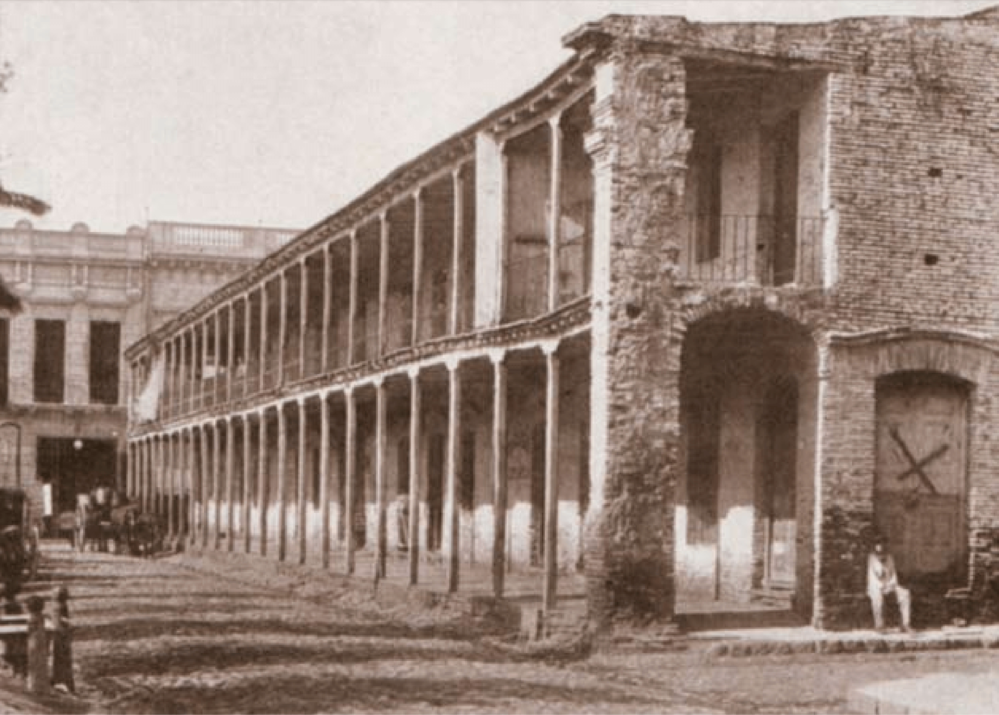
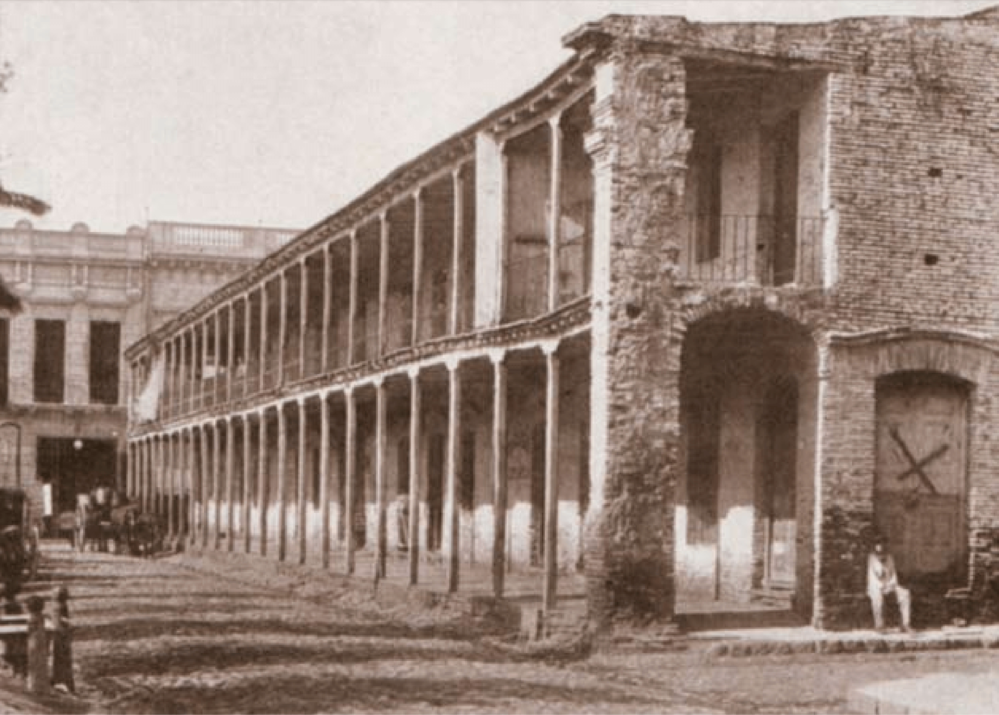
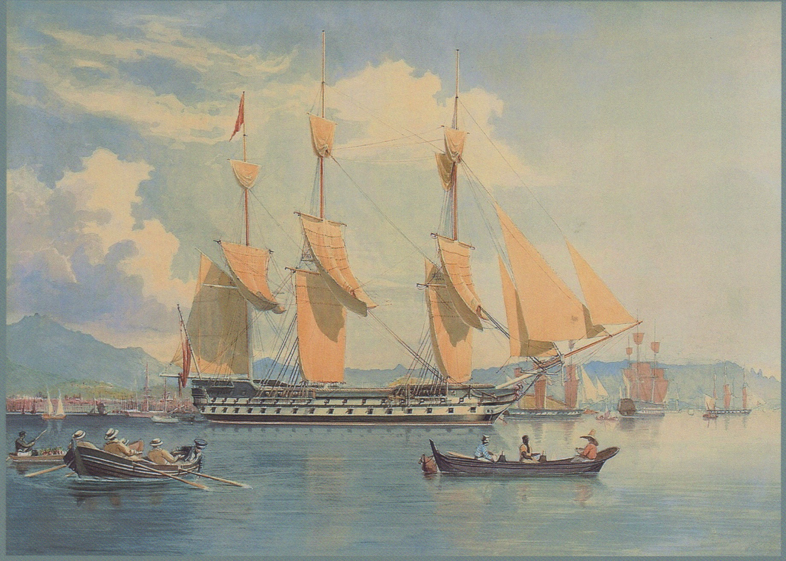
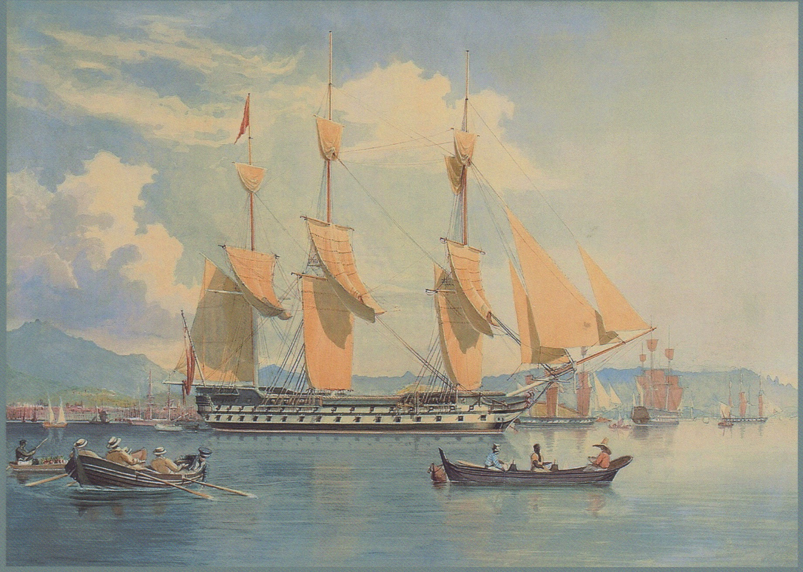

Niñez
Nació en Buenos Aires el 26 de junio de 1819 en el barrio de Monserrat
Fue a la escuela Monserrat, aunque no se destacaba como buena alumna y acompañaba a su padre al café porteño La Victoria, donde recitaba odas patrióticas.
«La verdadera prosperidad de un pueblo, como la verdadera nobleza de los individuos, está basada en la educación».
Juana Paula Manso fue una mujer atípica y pionera que se adelantó a realidades que luego se iban a ir concretando.
Fue traductora desde muy joven, periodista, escritora, pedagoga, feminista y una mujer que intervino activamente en política.
«Conozco que la época en que vivo soy en mi país un alma huérfana o una planta exótica que no se puede aclimatar».
Nació en Buenos Aires el 26 de junio de 1819 en el barrio de Monserrat
Fue a la escuela Monserrat, aunque no se destacaba como buena alumna y acompañaba a su padre al café porteño La Victoria, donde recitaba odas patrióticas.
Su padre fue un andaluz llamado José María Manso y su madre una porteña, Teodora Cuenca.
En 1836 la familia Manso tuvo que exiliarse en Montevideo por la persecución a los unitarios durante el gobierno de Juan Manuel de Rosas.
Luego, se exiliarían también en Río de Janeiro, donde conoció a su marido con quien tuvo a sus dos hijas, Eulalia y Herminia. Durante su matrimonio vivieron también en Estados Unidos y Cuba.
 

Juana Manso regresó a Buenos Aires con sus dos hijas en julio de 1853, ya sin Rosas en el poder.
Aquí escribió y dio clases particulares de inglés, francés e italiano, pero, al no poder sostener económicamente a su familia, se vio obligada a regresar a Brasil.
Finalmente, a mediados de 1859, regresó definitivamente a Buenos Aires, donde conoció a Domingo Faustino Sarmiento, tuvo una gran trayectoria como educadora y se convirtió en la primera mujer en ser funcionaria pública.

Juana Manso falleció en Buenos Aires el 24 de abril de 1875, fue sepultada en el Cementerio Británico y, en 1915, sus restos fueron trasladados al panteón de Maestros del cementerio de la Chacarita.
«Yo prefiero traducir porque mis ideas tal vez no tengan autoridad».
Desde muy temprana edad, Juana Paula se interesó en el estudio de idiomas y a los 14 hizo su primera traducción.
Dentro de su labor como traductora, encontramos obras como El egoísmo y la amistad o los defectos del orgullo, que su padre hizo imprimir bajo el seudónimo de Una joven argentina y Mambrogenia o la heroína de Grecia.
“Vosotras sois, queridas compatriotas, el objeto á quién dedico el débil ensayo de mis estudios; porque fue cerca de vosotras que gusté de esta é inocente distracción de la imaginación que al paso que contribuía á formar nuestra razón no inspira sentimientos tan nobles como generosos”
Vuestra compatriota.
Juana Manso
Tradujo varios escritos, entre ellos Las lecciones objetivas, de Norman Calkins; La libertad civili>, de Francis Lieber; Naturaleza y valor de la educación, de John Lalor, Lecturas e informes, de Horace Mann y el reglamento de Bibliotecas de Nueva York.
Asimismo, tradujo al castellano sus propias obras escritas en portugués durante su estadía y exilio en Brasil.
Asimismo, tradujo al castellano sus propias obras escritas en portugués durante su estadía y exilio en Brasil.